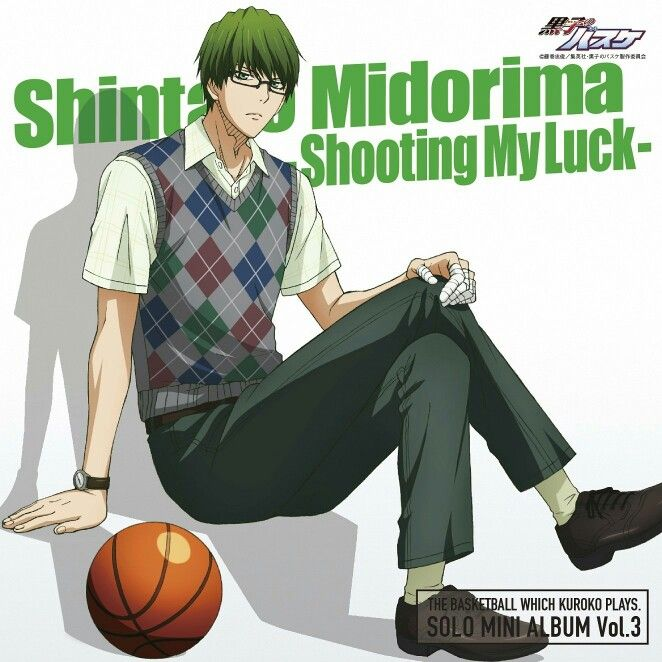
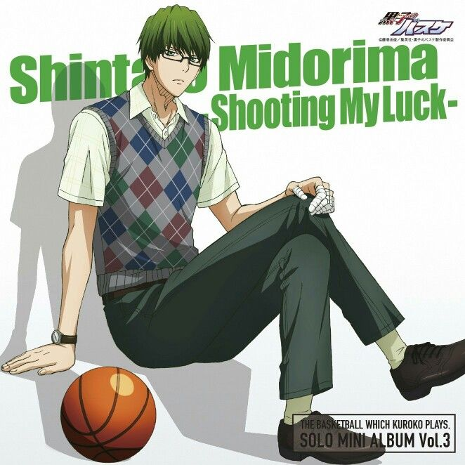

Сюжет
Сюжет «Баскетбола Куроко» рассказывает о баскетбольной команде старшей школы Сейрин, которая пытается стать победителем турнира среди старших школ. Ранее команда средней школы Тейко завоевала признание, победив в многочисленных соревнованиях. Её основной состав стал известен как «Поколение Чудес». После окончания школы пять игроков разошлись по разным школам. Тэцуя Куроко, «шестой игрок» Поколения Чудес, поступает в Сейрин, где есть только многообещающая, но никому не известная команда. Вместе с Тайгой Кагами, талантливым новичком, проведшим большую часть жизни в США, они стремятся вывести свою команду к вершине японского чемпионата. Для этого им нужно победить бывших товарищей Куроко по команде Тейко.


 
